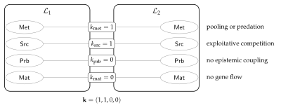
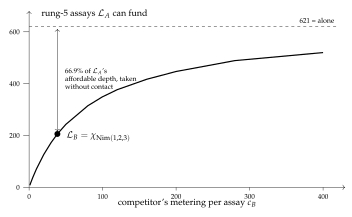

Chapter 23
Composing Learners
The individual is confined. That is not a remark about ambition; it is a proposition, and it is the reason this chapter exists. The hypothesis space is a tree with an ultrametric on it, and in an ultrametric a walk whose steps are all shorter than some radius never leaves the ball it began in. A learner that revises carefully cannot reach the theory it needs. The noughts-and-crosses measurement makes this concrete and slightly comic: the move that would rescue a confined population costs nothing and no individual can make it.
So the unit has to move, and this chapter moves it. A learner is redefined as a distribution over a population — scientists, computations holding no hypothesis at all, and reservoirs — with that population serving as a namespace. The operator that composes two such learners is parallel composition, which is to say no new machinery whatever. Everything interesting is then controlled by one dial: how much the two namespaces overlap, and in which of several typed namespaces the overlap sits.
Turned to zero, the dial gives independence, and independence turns out to be a theorem rather than a hope — though an unstable one, since two learners manufacturing names privately can collide by accident, and buying back the guarantee costs a naming discipline. Turned up, the same dial generates the standard table of ecological relations — competition, predation, mutualism, commensalism, theft — as sign conditions rather than as an inventory borrowed from biology. And it yields an asymmetry i think is the most interesting thing in the chapter: because tokens are conserved but formulae are not, cooperation can only ever be epistemic and competition is always metabolic. Two learners can both come out ahead in what they know. They cannot both come out ahead in what they hold.
23.1 Introduction
23.1.1 Why the unit moves up
The mortal scientist of \(\chSci\) is an individual: a term with a metabolic channel, a hypothesis in guard position, and a walk on the relaxation lattice. Twice in that note the individual turns out to be the wrong unit. Corollary 21.3 there observes that destructive assay leaves an individual-level hypothesis worthless after its own first test, so the subject of a hypothesis must be a namespace rather than a specimen. And Proposition 21.4 observes that an ultrametric walk of short steps never leaves the ball it began in, so the holder of a hypothesis cannot repair a shallow commitment; \S12 of that note supplies recombination, and \S17.2 states plainly that a population is required rather than preferred.
The worked example makes both visible on numbers §22.9 of \(\chGame\). The corner-opening mutant that invades the resident population differs from it by a revision of distance \(2^{-1}\), is unreachable to any individual by deepening, and is free to a lineage because the cost falls on an offspring holding no confirmations to invalidate.
So the individual is already not the unit of learning; the lineage is. This note asks what happens when the lineage is not the unit either.
23.1.2 The move, stated once
A learner is a distribution over a population: scientists, mortal computations holding no hypothesis, and resource reservoirs. That population is carried by names, and by Proposition 22.1 of \(\chGame\) those names are manufactured by quotation rather than drawn from a stock of atoms, so the family is generated by a decidable predicate and can be described. Hence a learner is a namespace, in the sense the hypothesis language already uses for the subject of a hypothesis.
Learners compose by parallel composition, because in this calculus there is nothing else for composition to be. When the namespaces are disjoint the composed learners have non-interacting capabilities. When they overlap they can interact internally, and that interaction includes both cooperation and competition.
This is the observation we would lead with. Corollary 21.3 of \(\chSci\) forces the object of inquiry to be a namespace; the present move makes the subject of inquiry one as well. The two sides of the cut are then described in the same vocabulary, by the same name predicates, at the same prices. That is not tidiness for its own sake: it is what makes a composed learner able to hold a hypothesis about its own components, and what makes the distinction between an internal interaction and an external one a matter of where one draws the cut rather than a matter of sort. Remark 21.15 of \(\chSci\) said trophic type is a fact about the cut. The same is now true of learnerhood.
23.1.3 What we are claiming, and what we are not
We claim that composition of learners is parallel composition on terms, union on namespaces, and undetermined on distributions; that the determination of the third is exactly the content of the interaction, and that it factors precisely when the namespaces are disjoint; that a single grade of separation is too coarse and a typed vector of grades recovers the ecological relations rather than importing them; that under conservation cooperation and competition are structurally different rather than opposite in sign; that non-interference is an observation and not a guarantee unless purchased; and that a composite’s phase is not a function of its parts’ phases, which we exhibit on exact numbers.
We do not claim to have proved a monoidal-category theorem: §23.4 states the
comparison map and the conditions for it to be invertible, and leaves the coherence to the
open problems. We do not claim the access-rate model of §23.10 is canonical; it is
one modeling choice, flagged as such, and the alternative is worked. As in \(\chGame\), guards
below are written in the ideal logic and the current interpreter accepts only the arithmetic and
pattern fragment of the where clause; occurrences that specify rather than perform a
check are marked.
23.2 What this chapter carries forward
The cut, the three grades of access, the conservation law, and the trophic profiles are as in the two preceding chapters and are not restated. Four things are worth having in front of the reader, because the argument turns on their exact form.
The logic is generated, and there is no restriction.
Feeding the presentation of the rho calculus to the OSLF family yields one structural connective
per term former, one context-labeled modality per rewrite rule and redex position, and—because
\(\mid\) carries an associative–commutative theory—a separating conjunction. A name is a quoted
process, so \(n \models @\varphi \iff n = @P\) with \(P \models \varphi\): this is namespace
logic [39], in which one describes a namespace by a property rather than enumerating
it. Following §22.2 of \(\chGame\) we treat new as sugar and drop the hidden-name
quantifier: freshness is manufactured by quotation, and graded separation is graded over a
described namespace rather than over a restriction vector,
\[P \models \varphi \sep{\Nsp}{k} \psi
\iff
P \equiv Q \mid R,\ Q \models \varphi,\ R \models \psi,\
\bigl|\, \fn(Q) \cap \fn(R) \cap \Nsp \,\bigr| = k .\]
Everything below that a modal logic could not do is done with \(\sep{\Nsp}{k}\), and
§23.5 turns on the choice of \(\Nsp\).
Let \(P\) be a process and \(C[-]\) any context with \(C[P] \neq P\). Then \(@C[P] \notin n(P)\). Hence a name fresh in \(P\) is manufactured by quoting any term properly containing \(P\), with no registry and no consultation.
Conservation and the game.
Tokens are conserved: \(\sigma + \kappa = \sigma_0 = \Theta\), with \(\sigma\) held in live stacks and \(\kappa\) migrated into the record. There is no primary producer. Under the internalizing encoding \(\llbracket - \rrbracket : \mathcal{C}(\rt) \to \rt\) a located stack becomes a message at a metabolic channel \(m_P\), and harvest is an ordinary receipt on \(m_P\) performed by someone else; the predatory contexts are exactly the non-image contexts holding a metabolic name \(\chSci\), Theorem 21.1. A game is a choice of admitted context class \(\mathcal{A}\) with \(\llbracket \mathcal{C}(\rt)\text{-}\Ctx \rrbracket \subseteq \mathcal{A} \subseteq \rt\text{-}\Ctx\).
The hypothesis space, and confinement.
Beneath the characteristic formula \(\chi_P\) sits a lattice of progressively weaker formulae obtained by forgetting conjuncts; revision is a walk on it, the metric is the \(\nu\)-stratified ultrametric \(d(\varphi,\psi) = 2^{-n}\), and distance, modal depth, and cost are one graded structure. Confinement (Proposition 21.4 of \(\chSci\)) says a walk whose steps are all shorter than \(2^{-n}\) never leaves the ball of radius \(2^{-n}\) it began in; cost-monotonicity (Proposition 21.5) says the escaping move is the expensive one; and bounded branching (Proposition 21.6) with its corollary poverty is confining says the number of siblings a scientist may evaluate is its stack divided by the cost of checking one.
Ecologies as a fibration.
A configuration is a partition of \(\Theta\) across loci together with a structural assignment; an ecology is a configuration with a distribution over reachable configurations. The assignment of ecologies to theories is a fibration rather than a functor, with a canonical section given by taking cost as the weight map, and functoriality requires logic-preserving morphisms because the senses are structural §21.15 of \(\chSci\). The present note is largely an argument that this fibration wants a tensor.
23.3 The learner
23.3.1 Three layers, and the distribution is one of them
What we have been calling a learner has three components, and it is worth separating them before asking what composition does, because composition acts differently on each.
A population. A term: a parallel composition of scientists, of mortal computations holding no hypothesis, and of reservoirs. This is an object of the calculus.
A namespace. The family of names the population carries—metabolic channels, source channels, probe channels, mating channels—described by a name predicate rather than listed, which by Proposition 23.1 is available because the names are manufactured from material the population already holds.
A distribution. A weighting on the configurations reachable from the population, in the sense of §21.13 of \(\chSci\): the microcanonical ensemble at fixed \(\Theta\), sampled by the construction of Chapter 13.
We take the third to be part of the learner rather than a decoration on it. The alternative—a learner is the population, and the distribution is a decoration indexed over it—would put composition in the base of the fibration of §21.15 of \(\chSci\), where it is uninformative: two populations composed in the base are just two populations. Putting the distribution inside the learner puts composition in the total space, which is where the interaction lives.
A learner is a triple \(\Lrn = (P, \Nsp, \mu)\) with \(P\) a \(\rt\) term, \(\Nsp\) a name predicate satisfied by exactly the names \(P\) carries in the sense of Definition 23.3 below, and \(\mu\) a distribution over the configurations reachable from \(P\) at total \(\Theta_{\Lrn} = \sum \sigma_i(0)\). We write \(\Nsp(\Lrn)\) and \(\mu(\Lrn)\) for the components.
Definition 23.1 does not say the population is a set of individual learners composed somehow. It says the population, weighted, is the learner, and that individual scientists inside it are components with no special status—exactly as a lineage in §21.12.10 of \(\chSci\) is a learner without any of its members being the learner. The nesting is real and the note uses it: §23.12 shows the three units of learning are distinguished by nothing but the revision distance each can reach.
23.4 Composition
23.4.1 One operator, three actions
For learners \(\Lrn_1 = (P_1,\Nsp_1,\mu_1)\) and \(\Lrn_2 = (P_2,\Nsp_2,\mu_2)\), \[\Lrn_1 \mid \Lrn_2 \;:=\; \bigl(\,P_1 \mid P_2,\ \ \Nsp_1 \vee \Nsp_2,\ \ \mu_{12}\,\bigr), \qquad \Theta_{\Lrn_1 \mid \Lrn_2} = \Theta_{\Lrn_1} + \Theta_{\Lrn_2},\] where \(\Nsp_1 \vee \Nsp_2\) is the disjunction of the two name predicates and \(\mu_{12}\) is the distribution over configurations reachable from \(P_1 \mid P_2\).
On the first component the operator is the calculus’ own parallel composition: associative and commutative up to structural congruence, free, and adding nothing. On the second it is disjunction of predicates, which is again free, and is where describing rather than enumerating pays—one does not have to compute a union of two sets of names, one takes an \(\vee\) of two formulae. On the third the operator is not determined by its arguments at all. That is the entire subject of this section.
\(\Theta\) is additive under composition, and it is the only quantity in §21.13 of \(\chSci\) that is. The order parameters are not: \(\iota\), the fraction of \(\Theta\) internal to scientists, is a stack-weighted mean of the parts’ values, and \(\delta\), the mean concealment depth of external stacks, is not a function of the parts’ values at all, because each learner’s members become candidate subjects for the other and enter the other’s mean.
Additivity of \(\Theta\) is immediate from the ledger law and the fact that composition mints nothing. For \(\iota\), write \(\iota_i = \sigma^{\mathrm{sci}}_i / \Theta_i\); then \(\iota_{12} = (\sigma^{\mathrm{sci}}_1 + \sigma^{\mathrm{sci}}_2)/(\Theta_1+\Theta_2)\), the weighted mean. For \(\delta\), the mean is taken over the external stacks available to a learner, and \(P_2\)’s stacks are external to \(P_1\) and were not in \(P_1\)’s index set. So \(\delta_{12}\) depends on the depth at which each learner’s stacks lie relative to the other’s senses, a quantity computed from the pair and not held by either.
That \(\delta\) is a property of the pair is the first sign that composition is not going to be innocent, and §23.9 makes it a measurement.
23.4.2 Disjointness is factorization
Let \(\Lrn_1, \Lrn_2\) be learners and let \(\Nsp = \Nsp_1 \vee \Nsp_2\). The following are equivalent.
\(P_1 \mid P_2 \models \top \sep{\Nsp}{0} \top\) with the split at \(P_1, P_2\): the two namespaces share no name.
No reduction of \(P_1 \mid P_2\) has its redex spanning the two parands.
\(\mu_{12} = \mu_1 \otimes \mu_2\): the composite’s distribution is the product of the parts’.
\((1)\Rightarrow(2)\): the rho calculus has one interaction rule, and it requires a send and a receipt on structurally equal names. A redex spanning the parands therefore witnesses a name in \(\fn(P_1) \cap \fn(P_2) \cap \Nsp\), contradicting \(k=0\). \((2)\Rightarrow(3)\): with no spanning redex, every step of \(P_1\mid P_2\) is a step of one parand in a context that does not participate, so the reachable configurations are pairs of independently reachable configurations, and the weight of a pair is the product of the weights since the cost of a step is charged to the parand taking it and the ledger is additive. \((3)\Rightarrow(1)\): if a name is shared, some configuration in which the corresponding rendezvous has fired has weight not equal to the product of its marginals—the two parands’ stacks after such a step are correlated by the transfer.
Theorem 23.1 is what makes “the namespaces are disjoint” worth saying. Disjointness of names is a syntactic condition; independence of distributions is the thing one actually wants when composing learners, because it is what licenses reasoning about each in isolation. The theorem says the syntactic condition is exactly the probabilistic one, and the graded separation \(\sep{\Nsp}{k}\) measures the gap when it fails. We know of no way to say this without a spatial layer: a purely behavioral logic cannot state the split at all, which is [23, Rem. 5] arriving in a new place.
23.4.3 The lax structure map is the interaction
Composition of learners is a candidate monoidal structure on the total space of the fibration \(\pi : \mathrm{Eco} \to \mathrm{GSLT}_{\mathcal{C}}\) of §21.15 of \(\chSci\), with unit the empty learner \((\mathbf{0}, \bot, \delta_{\varnothing})\). The obvious question is whether the canonical section \(s\)—cost as the weight map—is monoidal, and the answer is no, in a way we think is more useful than a yes.
There is a comparison morphism \[\lambda_{\Lrn_1,\Lrn_2} \;:\; s(\Lrn_1) \otimes s(\Lrn_2) \longrightarrow s(\Lrn_1 \mid \Lrn_2)\] sending a pair of independently sampled trajectories to the interleaving in which no spanning redex fires. It is an isomorphism if and only if the grade is zero, and in general it is not epi: the configurations in the image are exactly those reachable without interaction. The deviation—the mass \(\mu_{12}\) assigns outside the image of \(\lambda\)—is the probability that the composite does something neither part could do.
Existence: the non-interacting interleavings of two independent trajectories are reachable in the composite, and their weights are the products, since costs are additive. Iso at \(k=0\): Theorem 23.1. Failure of surjectivity at \(k>0\): a spanning redex is enabled and fires with positive rate under any weight map assigning positive weight to enabled steps, and the resulting configuration is not a product of independently reachable ones.
Conjecture 82 of \(\chSci\) guesses that the induced map on distributions is only lax and that the natural target is distributions ordered by stochastic dominance. Composition sharpens the guess into something one can compute: the defect of \(\lambda\) is the total interaction, and \(\sep{\Nsp}{k}\) resolves it by which names carry it. Cooperation and competition are then not two phenomena to be modeled but two signs of one measured quantity, and §23.6 says which sign each namespace can carry.
23.5 Typed overlap: the grading vector
23.5.1 One grade is not enough
The preceding chapter’s Proposition 22.2 is the lesson in miniature. There the connective was \(\sep{\Nsp}{0}\) and the concept was fork; grading over line names made the formula true of pairs of threats sharing a gap, which are not forks, and grading over square names made it exact. The choice of \(\Nsp\) was not a parameter of the encoding but the whole content of it.
At the level of learners the same demand recurs, and the namespace of a learner is not homogeneous. A shared metabolic channel and a shared probe channel are both “an overlap of one name” and they are not remotely the same relation.
For a learner \(\Lrn\) with population \(P\), the namespace \(\Nsp(\Lrn)\) decomposes into four sub-namespaces, each given by a name predicate:
\(\Met(\Lrn)\), the metabolic names: the channels at which \(P\)’s components hold their stacks, in the sense of \(\chSci\), Definition 21.7;
\(\Src(\Lrn)\), the source names: the channels of persistent emitters \(P\) draws on, the access profile of \(\chSci\), Definition 21.11;
\(\Prb(\Lrn)\), the probe names: the channels on which \(P\)’s scientists install assays, which by §21.12.6 of \(\chSci\) are both-type channels supporting dialogue of depth at least two;
\(\Mat(\Lrn)\), the mating names: the channels on which genomes are disclosed and recombined.
For learners \(\Lrn_1,\Lrn_2\) the grading vector is \[\mathbf{k}(\Lrn_1,\Lrn_2) \;=\; \bigl(k_{\mathrm{met}},\, k_{\mathrm{src}},\, k_{\mathrm{prb}},\, k_{\mathrm{mat}}\bigr), \qquad k_{\tau} = \bigl|\, \fn(P_1)\cap \fn(P_2) \cap \Nsp_{\tau} \,\bigr| ,\] the componentwise grade at which \(P_1 \sep{\Nsp_\tau}{k_\tau} P_2\) holds. Composition is non-interacting when \(\mathbf{k} = \mathbf{0}\).
{!}{
\(\fitwidth{

23.5.2 The relations, derived
The point of typing the overlap is that the classical table of ecological relations then falls out as sign conditions on the components, rather than being imported as a taxonomy. Write \(\Delta_i\) for the change in learner \(i\)’s expected residual life under composition relative to isolation.
\(\fitwidth\){
| overlap | relation | \((\Delta_1,\Delta_2)\) | mechanism |
|---|---|---|---|
| \(\mathbf{k}=\mathbf{0}\) | neutralism | \((0,0)\) | Theorem 23.1: \(\mu\) factors |
| \(k_{\mathrm{src}}>0\) only | exploitative competition | \((-,-)\) | dilution of a finite reserve (§23.10) |
| \(k_{\mathrm{met}}>0\), asymmetric | predation | \((+,-)\) | harvest as a receipt, \(\chSci\), Def. 21.8 |
| \(k_{\mathrm{met}}=1\), pooled | mutualism (metabolic) | \((+,+)\) | the composite of \(\chSci\), Prop. 21.14 |
| \(k_{\mathrm{prb}}>0\), one-way | commensalism (epistemic) | \((+,0)\) | reading a surface another paid for |
| \(k_{\mathrm{prb}}>0\), two-way | mutualism (epistemic) | \((+,+)\) | §23.6: formulae are not conserved |
| \(k_{\mathrm{prb}}>0\), theft | exploitation (epistemic) | \((+,-)\) | §21.10 of \(\chSci\): holding a model exposes it |
| \(k_{\mathrm{mat}}>0\) | not composition | — | §23.8: the learners are one |
}
Let \(\Lrn_1 \mid \Lrn_2\) have \(k_{\mathrm{met}} = 1\) with the shared name a pooling channel—a metabolic channel on which both parands both receive and reissue—and \(k_\tau = 0\) otherwise. Then the composite is exactly the construction of \(\chSci\), Proposition 21.14: two specialists sharing a metabolic channel, each free to tune its access profile independently, with the yield pooled. Hence Proposition 21.13 there, which dominates the mixed strategy for an atom, does not apply.
Read with Remark 21.15 of \(\chSci\), Proposition 23.4 says the difference between “one dual-feeding organism” and “two specialists in symbiosis” is the value of \(k_{\mathrm{met}}\) and where one chooses to draw the cut, not a fact about either. The endosymbiotic reading is available and we note it without leaning on it [59]: what the formalism contributes is that the boundary has a number attached to it.
Let \(\Nsp = \Met \vee \Src \vee \Prb \vee \Mat\) and suppose one grades only over \(\Nsp\). Then \(\sep{\Nsp}{k}\) cannot distinguish a composite in exploitative competition (\(k_{\mathrm{src}}=1\), rest zero) from one in symbiosis (\(k_{\mathrm{met}}=1\), rest zero), since both satisfy \(\sep{\Nsp}{1}\); and the two have opposite signs in Table 23.1. Hence the vector of Definition 23.4 is not a refinement of convenience.
This is the same argument as \(\chGame\), Proposition 22.2, one level up, and we take the recurrence as evidence that choosing the grading namespace is where the modeling work in this framework actually happens.
23.6 Cooperation and competition are structurally unlike
23.6.1 Two currencies, one conservation law
Under Remark 21.10 of \(\chSci\) every metabolic transfer is zero-sum: predation is the purchase of somebody else’s remaining time. It follows immediately that cooperation cannot be a token transfer leaving both parties richer, and one might conclude that a conserved world has no room for mutualism at all. It does, and the room is in exactly one place.
\(\Theta\) is fixed and never minted. A formula is a different kind of object: a genome is a quotation, \(@P\) does not reduce, quotation is free while held, and inspection by a name predicate is grade-three access, the cheapest on the ladder. Nothing forbids two learners from holding the same formula, and one learner’s coming to hold it does not deprive the other. The ecology is conserved; the epistemics are not.
Let \(\Lrn_1 \mid \Lrn_2\) have \(k_{\mathrm{prb}} = k_{\mathrm{mat}} = 0\), so that all overlap is metabolic or source. Then \(\Delta_1 + \Delta_2 \leq 0\), with equality only when no shared name carries a transfer.
Residual life is stack divided by burn rate. Every step over a shared metabolic or source name either moves tokens from one parand to the other, which is zero-sum in stack and strictly negative in aggregate residual life whenever the two burn rates differ, or debits both parands for the rendezvous, which is negative. Pooling (Proposition 23.4) is the boundary case in which the transfer is a loop and the aggregate is unchanged; even there the rendezvous is metered, so equality requires no transfer at all.
So the only positive-sum overlap is epistemic, and it has two mechanisms, both already in the companion notes.
23.6.2 Cost relocation, and who is billed
There are two routes to any predicate about an environment: read it, if the environment has computed it into legible structure, priced by formula depth; or drive it, by taking steps and watching, priced by rendezvous §22.5.1 of \(\chGame\). If \(\Lrn_1\)’s components compute a predicate into structure standing at a name in \(\Prb(\Lrn_1) \cap \Prb(\Lrn_2)\), then \(\Lrn_2\) reads at grade one what it would otherwise drive at grade two. The total metering for both learners to know the predicate falls, and no token has been created.
Remark 22.9 of \(\chGame\) makes the point that putting threats into the term relocates a cost from the scientist’s budget to the world’s, and that the interesting quantity is not whether the work is done but who is billed for it. Composition is what makes that question have two answers inside one system. A shared legible surface is stigmergy, and it is the only mechanism by which two mortal learners in a conserved world can both come out ahead.
Let \(\varphi\) be a predicate both learners require, costing \(\kappa_{\mathrm{drive}}\) to establish by interaction and \(\kappa_{\mathrm{read}}(d) < \kappa_{\mathrm{drive}}\) to read from structure, and let \(\kappa_{\mathrm{write}}\) be the cost to \(\Lrn_1\) of computing it into structure at a shared probe name. Then \(\Delta_1 + \Delta_2 > 0\) whenever \[2\,\kappa_{\mathrm{drive}} \;>\; \kappa_{\mathrm{drive}} + \kappa_{\mathrm{write}} + \kappa_{\mathrm{read}}(d),\] that is, whenever writing once and reading once costs less than driving twice. This is not available over \(\Met\) or \(\Src\) by Proposition 23.6.
The mechanism cuts both ways and the notes already say so. Holding a hypothesis requires exposing it, because a guard is surface, so \(\Prb\) overlap that lets \(\Lrn_2\) read \(\Lrn_1\)’s confirmed structure also lets it read \(\Lrn_1\)’s theory without experimenting §21.10 of \(\chSci\). Whether epistemic overlap is mutualism or exploitation is not settled by the grade; it is settled by whether the reading learner reciprocates, which is the plagiarism equilibrium left open as Problem 2 there. What the present framing adds is that the question is well posed as a sign condition on one component of \(\mathbf{k}\).
Cooperation is epistemic; competition is metabolic.
23.7 Non-interference is not stable
Disjointness of namespaces is the condition under which composition is innocent, so it matters whether it can be relied upon. It cannot, by default, and the reason is one the companion note already records for a different purpose.
Let \(\Lrn_1 \mid \Lrn_2\) have \(\mathbf{k} = \mathbf{0}\) at some configuration. Because name manufacture is decentralized and freshness is scope-relative (\(\chSci\), Remark 21.3), the two populations may subsequently manufacture structurally equal names at loci private to each. Hence \(\mathbf{k} = \mathbf{0}\) at one configuration does not entail \(\mathbf{k} = \mathbf{0}\) at a successor, and neither learner need have taken any step aimed at the other.
This is Remark 21.14 of \(\chSci\)—closure is luck, not construction—together with Proposition 21.26 there, that decentralization makes recombination generative precisely because two parents may independently hold structurally equal names. What is a source of novelty within a lineage is a source of unplanned coupling between learners.
One cannot compose two learners and certify non-interference from the parts alone. Certification requires either a global check at each configuration, which is model checking and is priced, or a discipline on name manufacture.
The discipline exists, it is cheap, and it is the one the board of §22.4 of \(\chGame\) already uses.
Let \(\Lrn_1\) and \(\Lrn_2\) manufacture every private name by quoting a term properly containing a distinguished root \(r_1\), respectively \(r_2\), with \(r_1 \neq r_2\) and neither root occurring in the other’s population. Then no name manufactured by \(\Lrn_1\) is structurally equal to a name manufactured by \(\Lrn_2\), and \(\mathbf{k}\) is constant along every reduction that does not introduce a name from outside.
By Proposition 23.1 a manufactured name is \(@C[r_i]\) for a context \(C\) with \(C[r_i] \neq r_i\), so it codes a term properly containing \(r_i\). Structural equality of \(@C[r_1]\) and \(@C'[r_2]\) would give \(C[r_1] \equiv C'[r_2]\), and by well-foundedness of the coding—a name occurring in a term codes a strictly smaller term—this forces \(r_1\) to occur in \(C'[r_2]\), contradicting the hypothesis that \(r_1\) does not occur in \(\Lrn_2\)’s population.
This is the same trick as the board’s three name families \(@[*b,k]\), \(@[*b,\texttt{"m"},k]\), \(@[*b,\texttt{"t"},s]\), which are pairwise disjoint by construction and which is what makes grading over \(\Th_b\) available in the first place. Applied to learners it says: root each learner’s namespace at its own quotation and non-interference becomes a property one can rely on rather than one one must keep checking. It also says that a learner which wants to interact must import a name from outside its own root, which is a step, which is metered. Under rooting, every interaction has an identifiable first cause with a price attached—which is a better situation than the notes have had so far, where accidental coupling was possible and untraceable.
23.8 Merger
Overlap in the mating namespace is not a kind of interaction. It is the failure of the two learners to be two.
By \(\chSci\), Proposition 21.18, two computations can recombine exactly at their homologous loci, so conspecificity is agreement of path sets and reproductive isolation is namespace disjointness. If \(k_{\mathrm{mat}} > 0\) and the shared names are homologous, then genomes cross the boundary, alleles from each appear in the other’s descendants, and after finitely many generations neither population’s namespace is described by its original predicate.
The merger \(\Lrn_1 \Merge \Lrn_2\) is the learner \[\bigl(\,P_1 \mid P_2,\ \ \Nsp_1 \vee \Nsp_2,\ \ \mu_{\Merge}\,\bigr)\] whose distribution ranges over configurations reachable under a recombination discipline admitting homologous loci across the two populations, together with the identification of the two mating namespaces.
Merger and composition agree on the first two components of Definition 23.1 and differ on the third, which is precisely why the third had to be part of the learner. As operators they behave differently in ways worth recording.
Composition is associative and commutative up to \(\equiv\) and admits the empty learner as a unit. Merger is commutative but is neither associative in general—\((\Lrn_1 \Merge \Lrn_2) \Merge \Lrn_3\) and \(\Lrn_1 \Merge (\Lrn_2 \Merge \Lrn_3)\) admit different homology relations, since homology is not transitive across intermediate path sets—nor unital in the same sense, since \(\Lrn \Merge \mathbf{0}\) imposes an identification that \(\Lrn \mid \mathbf{0}\) does not. Moreover merger is irreversible: no composition of the merged learner recovers the parts, because the alleles have crossed.
There is a temptation to treat merger as composition at high \(k_{\mathrm{mat}}\) and be done. We resist it for two reasons. First, the sign structure of Table 23.1 has no entry for it: merger is not \((+,+)\) or \((+,-)\), because after it there are no two parties to assign signs to. Second, and more usefully, merger is the operator that changes the identity of a learner while composition changes only its situation, and §23.12 needs that distinction: a lineage escapes confinement by recombination within itself, and a federation escapes by composition with another. Merger is the third thing, and it escapes by ceasing to be the learner that was confined.
23.9 Phase is not compositional
Figure 2 of \(\chSci\) divides the \((\iota,\delta)\) plane into three regions: at low \(\delta\) food lies in the open and senses suffice, so a theory is overhead; at high \(\iota\) or high \(\delta\) discovery costs more than it returns and everything starves; in between, hypothesis formation pays. The boundaries are where the foraging inequality changes sign.
There exist learners \(\Lrn_1, \Lrn_2\) each of which lies in the science-pays band in isolation and whose composite lies outside it. Specifically:
Downward, into foraging-suffices. If \(\Lrn_2\)’s components lie shallow to \(\Lrn_1\)’s senses—\(\delta\) small in the pair, which by Remark 22.2 of \(\chGame\) means few plies of lookahead are needed to model them—then \(\Lrn_1\)’s cheapest rung dominates its theory-holding rungs, since the prey is legible without inquiry.
Downward, into starvation. If composition raises \(\iota\) past the upper boundary, which it does whenever \(\Lrn_2\) is stack-rich and reservoir-poor, then no available locus satisfies the foraging inequality for either party.
Upward, out of starvation. If \(\Lrn_1\) is below its minimum viable endowment and \(k_{\mathrm{met}}=1\) is a pooling channel, then Proposition 23.4 rescues it.
The interesting case is none of these three, because all three are couplings a modeller can see coming. The case worth measuring is the one in which the two learners never perceive each other at all.
23.10 Competitive dilution, measured
23.10.1 The model, and its one choice
Take \(\mathbf{k} = (0,1,0,0)\): two learners sharing exactly one source name and nothing else. Neither can perceive the other—no probe name is shared, so no assay of either reaches the other’s surface—neither can harvest the other, and neither can interbreed with it. By Table 23.1 the relation is exploitative competition, and the only channel of influence is \(\Theta\) itself.
The source is a single contract, hence rate-limited and non-exclusive (\(\chSci\), Definition 21.11). We must say how the two learners’ calls interleave, and this is the note’s one genuinely free modeling choice.
A learner calling a source completes one assay per \(c\) metered units, where \(c\) is its expected metering per assay at the rung it holds. Learners queue at the source as fast as they complete assays, so learner \(i\)’s share of the source’s payouts is \[s_i \;=\; \frac{1/c_i}{\sum_j 1/c_j}.\]
The alternative—equal shares regardless of cost—is defensible if one reads the contract as serving callers round-robin rather than first-come. We work Definition 23.6 and note in §23.14 what changes under the alternative: the dilution survives, the asymmetry does not.
Let two learners share one source of reserve \(R_0\) paying quantum \(q\) per assay, at price \(p\) tokens per metered unit, with expected meterings \(c_1, c_2\) per assay, both self-funding (\(q > p c_i\)). Then over the life of the source, learner \(i\) receives \[G_i \;=\; \frac{R_0}{q}\cdot \frac{c_{j}}{c_i + c_{j}} \qquad (j \neq i)\] assays and accumulates \(\Sigma_i = G_i\,(q - p c_i)\). Consequently the number of assays of any deficit-running rung of cost \(c^\ast > q/p\) that learner \(i\) can subsequently fund is \[D_i \;=\; \frac{\Sigma_i}{p c^\ast - q} \;=\; D_i^{\text{alone}} \cdot \frac{c_{j}}{c_i + c_{j}} ,\] so that each learner retains exactly its own share of the reservoir as a fraction of the inquiry it could afford in isolation. The factor is independent of \(R_0\), \(q\), \(p\) and \(c^\ast\).
Immediate from Definition 23.6: composition scales \(G_i\) by \(s_i\) and everything downstream is linear in \(G_i\).
A learner whose best affordable rung is self-funding loses assays but no depth, since the rung it holds needs no surplus. A learner still climbing—whose next rung runs a deficit and must be funded from accumulated surplus—loses depth in exact proportion to its share. Hence competition at a shared reservoir costs the unfinished science strictly more than the finished one, and costs nothing at all to a learner that has stopped.
Corollary 21.1 of \(\chSci\) says poverty is confining: a scientist whose stack affords few evaluations per move takes the cheapest available move, the cheapest moves are the shortest, and by Proposition 21.4 short moves cannot leave their ball. Proposition 23.13 exhibits a mechanism of impoverishment that requires no contact whatever. A learner can be confined to a shallow theory by a competitor that cannot see it, cannot model it, and has no hypothesis about it—only a name in common. We think this is the most surprising consequence of the composition operator, and it is the classical competitive exclusion principle [57, 58] arriving in an epistemic currency rather than a demographic one.
23.11 The worked example: two games, one wall
23.11.1 A second environment
The game note laddered noughts-and-crosses and found the complete theory dominated. To compose we need a second learner, and the second environment should differ in the one respect that matters: whether its complete theory is affordable.
We take Nim, normal play [55]. The ladder is built by the same method and priced by the same schedule \(\kappa(d) = 2^d\), with the cost of a decision at rung \(r\) equal to \(|M| \cdot \sum_{\text{rules } 1..r} \kappa(d_{\text{rule}})\) and \(|M|\) the number of legal moves.
\(\fitwidth\){
| rung | formula added | kind and depth | \(\kappa\) |
|---|---|---|---|
| \(0\) | \(\top\) | — | \(0\) |
| \(1\) | \(\exists s.\ \mathrm{One}(s) \wedge \mathrm{Takes}(s)\) | spatial, depth 1 | \(2\) |
| \(2\) | \(\exists s.\ \mathrm{Two} \wedge \mathrm{Equalizes}(s)\) | spatial, depth 1 | \(2\) |
| \(3\) | \(\chi_{\mathrm{Nim}} := \exists s.\ \mathrm{NimSum}_0(s)\) | name-level, depth 0 | \(1\) |
}
Rung 1 says: exactly one heap is nonempty, take it. Rung 2 says: exactly two heaps are nonempty, equalize them. Rung 3 is Bouton’s theorem: move to a position whose nim-sum is zero. All three are predicates on the heap sizes, read off the reflected structure of the position by a name predicate; none contains a modality, and rung 3 in particular requires no lookahead at all.
\(\chi_{\mathrm{Nim}}\) is exact and contains no modality and no fixed point. This is Remark 21.6 of \(\chSci\)—a finite theory is complete exactly when the environment’s regularity is structural—in its sharpest available form: Nim’s regularity is so structural that its complete theory sits at depth zero, where noughts-and-crosses needs \(\nu X.\forall s.[K_s](\neg \mathrm{Lost} \wedge \exists t. \langle\langle K_t\rangle\rangle X)\) and nine unfoldings.
23.11.2 The ladder pays, and here it keeps paying
All figures are exact over all plays, symmetrized over which side moves first, against a uniform-random opponent, computed by memoized recursion (Appendix 23.17).
\(\fitwidth\){
| rung | added rule | win | loss | cost | \(\Delta\)win | return |
|---|---|---|---|---|---|---|
| l}{Nim\((3,4,5)\) nim-sum \(=2\), an N-position; branching \(12\)} | ||||||
| \(0\) | \(\top\) | \(0.5000\) | \(0.5000\) | \(0.0\) | — | — |
| \(1\) | take-all | \(0.6567\) | \(0.3433\) | \(38.9\) | \(+0.1567\) | \(+0.00403\) |
| \(2\) | equalize | \(0.8899\) | \(0.1101\) | \(80.4\) | \(+0.2332\) | \(+0.00562\) |
| \(3\) | \(\chi_{\mathrm{Nim}}\) | \(0.9966\) | \(0.0034\) | \(99.6\) | \(+0.1067\) | \(+0.00555\) |
| l}{Nim\((1,2,3)\) nim-sum \(=0\), a P-position; branching \(6\)} | ||||||
| \(0\) | \(\top\) | \(0.5000\) | \(0.5000\) | \(0.0\) | — | — |
| \(1\) | take-all | \(0.5917\) | \(0.4083\) | \(15.2\) | \(+0.0917\) | \(+0.00602\) |
| \(2\) | equalize | \(0.7958\) | \(0.2042\) | \(31.4\) | \(+0.2042\) | \(+0.01262\) |
| \(3\) | \(\chi_{\mathrm{Nim}}\) | \(0.9000\) | \(0.1000\) | \(38.5\) | \(+0.1042\) | \(+0.01476\) |
}
Three environments, three answers. In noughts-and-crosses \(\chi\) costs \(679.2\), wins \(0.873\), and is strictly dominated by a name-level heuristic winning \(0.918\) at \(255.9\). In Nim\((3,4,5)\) \(\chi_{\mathrm{Nim}}\) costs \(99.6\), wins \(0.9966\), and is not dominated: it is more expensive than the rung below and strictly better. In Nim\((1,2,3)\) it is the best marginal purchase on the whole ladder, returning \(+0.0148\) per metered unit where the rung below returns \(+0.0126\) and the rung below that \(+0.0060\). The returns rise.
This is worth stating carefully because it is the hinge of the composition argument. Remark 21.9 of \(\chSci\)—yield, not truth—says a lineage under selection drifts toward yield-biased search wherever yield and discrimination disagree. Table 23.2 shows they do not always disagree. Whether they do is fixed by the environment: by how much of its regularity is structural rather than reduction-following (Remark 21.6 there), and by the branching factor, which by Proposition 22.3 of \(\chGame\) is the arity of the quantification over redex positions. So is truth affordable? is not a question about scientists. It is a question about worlds, and composition is the operator that puts two answers into one budget.
Nim\((1,2,3)\) has nim-sum zero, so the first player has no move to a zero position and \(\chi_{\mathrm{Nim}}\) fires no rule; the policy falls through to uniform choice. It still wins \(0.800\) as first player because the random opponent errs and the complete theory punishes the error the moment it appears—but it has nothing to say about how to provoke one. As second player it wins \(1.000\). That the complete theory is silent on exploiting a fallible opponent is Observation 22.6 of \(\chGame\) in a domain where \(\chi\) is otherwise cheap and good, which is some evidence that the phenomenon is about completeness rather than about cost.
\(\fitwidth{
23.11.3 The composite
Let \(\Lrn_A\) be a population playing noughts-and-crosses and \(\Lrn_B\) a population playing Nim\((1,2,3)\), each against the practice wall of §22.3.2 of \(\chGame\), rooted at distinct quotations so that Proposition 23.9 applies. They share exactly the wall: \(\mathbf{k} = (0,1,0,0)\). The wall’s reserve is \(R_0 = 12{,}000\) at quantum \(q = 6\), and the price is \(p = 0.05\) tokens per metered unit, as in that note’s world.
At \(p = 0.05\) and \(q = 6\) a rung is self-funding exactly when its expected metering is below \(q/p = 120\). For the noughts ladder that admits rungs \(0,1,2\) and excludes \(3,4,5,6\); so \(\Lrn_A\)’s deepest self-funding rung is rung 2, at \(c_A = 77.8\) and a net of \(+2.11\) tokens per assay, and every deeper rung must be funded out of accumulated surplus. For \(\Lrn_B\), \(\chi_{\mathrm{Nim}}\) costs \(c_B = 38.5\), net \(+4.08\): the complete theory of \(\Lrn_B\)’s environment is self-funding, and the incomplete theory of \(\Lrn_A\)’s environment is not.
\(\fitwidth\){
| share of wall | assays | terminal surplus | rung-5 assays funded | |
|---|---|---|---|---|
| \(\Lrn_A\) alone | \(1.000\) | \(2000\) | \(4220\) | \(621\) |
| \(\Lrn_A\) composed | \(0.331\) | \(662\) | \(1397\) | \(206\) |
| \(\Lrn_B\) composed | \(0.669\) | \(1338\) | \(5452\) | — (none needed) |
}
\(\Lrn_A\)’s affordable depth falls from \(621\) assays of rung-5 play to \(206\). The mechanism is entirely \(\Theta\): \(\Lrn_B\) holds no hypothesis about \(\Lrn_A\), has no probe name in common with it, could not derive its metabolic channel if it wanted to, and would gain nothing by doing so. It simply finishes its assays faster, because its environment admitted a cheap complete theory, and therefore reaches the wall more often.
\(\Lrn_B\) is unaffected in depth. Its best rung is self-funding, so the surplus it forgoes buys it nothing it needs. \(\Lrn_A\) is affected in depth alone, because everything it still wants to learn runs a deficit. The learner with the finished science pays in currency it does not spend; the learner with the unfinished science pays in the only currency that matters to it.
\(\fitwidth{

23.11.4 Succession is a change of the grading vector
The wall is finite, so this composite has an ending, and the ending is where the typing of the overlap earns its keep.
Let \(\Lrn_1 \mid \Lrn_2\) have \(\mathbf{k} = (0,1,0,0)\) with the shared source exhaustible. When the source is exhausted, the foraging inequality fails at every source locus for both learners. The composite then either dies or acquires \(k_{\mathrm{met}} > 0\) or \(k_{\mathrm{prb}} > 0\); that is, succession in the sense of \(\chSci\), Proposition 21.15, is precisely a change in which component of the grading vector is nonzero.
Acquiring \(k_{\mathrm{met}} > 0\) requires deriving a name in the other learner’s metabolic namespace, which under capability gating is real work: a hypothesis describing that namespace must be formed and installed as a guard. By Proposition 21.6 of \(\chSci\) the branching a learner can survey is its stack divided by the cost of one check. Hence the transition is available to whichever learner retains apparatus for forming namespace hypotheses about adaptive subjects—which by Corollary 21.5 there is the prey-feeder, and in this composite is the learner whose science was unfinished.
In the worked composite, \(\Lrn_B\) ends the source phase holding \(5452\) tokens and \(\Lrn_A\) holds \(1397\); \(\Lrn_B\)’s stack is \(3.90\) times \(\Lrn_A\)’s. By the foraging inequality that stack is worth opening at any concealment depth these prices make affordable. So the learner that was confined during the source phase is the one positioned to harvest at succession, and the capital it harvests was accumulated by the learner that confined it.
We resist reading anything edifying into this. What the framework says is narrow and checkable: a cheap complete theory is a source-like access profile—non-adaptive, converged, with no standing revision cost—and by Corollary 21.5 of \(\chSci\) the apparatus for modeling adaptive subjects is a heterotroph’s expense, not carried by anything that does not need it. A learner that has finished its science has, by construction, stopped paying for the machinery that would let it form a hypothesis about a competitor. That is not a punishment for being right. It is what being right in a closed domain costs, and it is the same fact as Proposition 22.7 of \(\chGame\): a solved science is a dead ecology.
23.12 The three units of learning
Collecting the three notes, the units of learning are distinguished by exactly one thing: the revision distance each can reach.
\(\fitwidth\){
| unit | mechanism | reachable move | authority |
|---|---|---|---|
| individual | walk the relaxation lattice | confined below \(2^{-n}\) | \(\chSci\), Prop. 21.4 |
| lineage | crossover at a shallow locus | \(2^{-1}\) | §21.12.10 of \(\chSci\), §22.9.3 of \(\chGame\) |
| composed learner | adopt another root | the whole tree | §23.4, Prop. 23.9 |
}
A lineage’s recombination acts at loci of its own genomes, so every allele it can install already occurs in one of its members and every namespace it can come to describe is generated from its own root. Under Proposition 23.9 a change of root is therefore unreachable by recombination. It is reachable by composition, since \(\Nsp_1 \vee \Nsp_2\) contains names manufactured from both roots and the composite may install guards over either.
The game note measured the middle row: the corner-opening allele was unreachable to any individual by deepening, free to a lineage by crossover, and the invasion was unconditional. The top row is the analogue one step up, and its content is that whatever a lineage’s early commitments fixed—not merely its opening, but the family of names its whole hypothesis language is generated from—is fixed for good against every mechanism internal to it. Composition is the only operator in these notes that changes it, and merger (§23.8) is the only one that changes the learner’s identity along with it. We do not know whether the series continues, and Problem 6 asks.
23.13 Composition is the exit from the dead ecology
Proposition 22.7 of \(\chGame\) says a population all of whose members hold theories that draw against one another performs no harvest, burns tokens to live, and starves; and that the better its science the sooner it dies. Remark 22.12 there lists three exits and takes none of them: enlarge the game so \(\chi\) is unaffordable, let the rules drift, or admit an external source.
The first exit is composition.
Let \(\Lrn\) be a learner in the terminal state of \(\chGame\), Proposition 22.7: harvest rate zero, \(\chi\) held by every member, \(\sigma\) declining monotonically. Let \(\Lrn'\) be any learner whose probe namespace is generated from a distinct root, so that \(\Lrn\) holds no hypothesis satisfied by \(\Lrn'\)’s components. Then in \(\Lrn \mid \Lrn'\) with \(k_{\mathrm{met}} > 0\) the foraging inequality is satisfiable again, because \(\Lrn'\)’s stacks are concealed at a depth \(\Lrn\) has not paid to see, and paying is once more a purchase with a return.
This is the content we would most like a reader to take away. “Enlarge the game so that the complete theory is unaffordable” sounds like a modeling intervention—a change of domain imposed from outside. Under Definition 23.2 it is an operation inside the framework, performed by the ecology on itself, requiring no new rewrite rule and no new sort. A science that has closed reopens by meeting a science that has not. The heat death of \(\chGame\) was never a property of noughts-and-crosses; it was a property of a world with one game in it.
23.14 What this shows, and what it does not
Shown.
That a learner may be taken to be a weighted population and hence a namespace, and that under that reading composition is parallel composition on terms, disjunction on namespaces, and undetermined on distributions (§23.3–§23.4). That disjointness of namespaces is exactly factorization of the distribution, so the lax comparison map’s defect is the interaction and is a quantity rather than a caveat (Theorem 23.1, Proposition 23.3). That a typed grading vector recovers the ecological relations as sign conditions (§23.5). That conservation makes epistemic overlap the only positive-sum overlap (§23.6). That non-interference is unstable by default and purchasable by rooting (§23.7). That phase is not compositional (§23.9) and that competitive dilution confines a learner without contact, in a closed form and on exact numbers (§23.10–§23.11).
Not shown.
We have not proved a monoidal-category theorem: Proposition 23.3 gives the comparison map and its invertibility condition, and the coherence conditions, the unit laws up to the identifications merger imposes, and the relationship to the fibration’s section are left open. Definition 23.6 is a modeling choice; under the round-robin alternative each learner receives half the payouts and the retained fraction becomes \(1/2\) for both, so the dilution survives and the regressiveness weakens to whatever asymmetry the rungs themselves carry—in the worked composite \(\Lrn_A\) would retain \(0.500\) rather than \(0.331\), and still lose depth where \(\Lrn_B\) loses none. As in \(\chGame\) the measurements are exact computations over policies rather than observations of a running population: the ecology of Appendix 23.16 is written and not run to a fixed point, so every claim about invasion and succession is a claim about payoffs. And the Nim ladders, like the noughts ladder, are priced by a schedule that is a choice.
The honest summary.
The composition operator was, going in, an obvious formality—parallel composition is already there, and saying that learners compose by it looks like a restatement. What the exercise produced instead was three things we did not put in: that the probabilistic content of composition is exactly a graded separation, that a typed grading vector is forced rather than convenient, and that two learners which cannot perceive each other can nonetheless confine each other’s inquiry by a measurable amount.
23.15 Open problems
Coherence. Is \((\mathrm{Eco}, \mid, \mathbf{0})\) lax monoidal with \(\lambda\) of Proposition 23.3 as the structure map, and is a section of \(\chSci\), Remark 21.25, lax monoidal over it? Since that remark withdraws the claim that any one section is canonical, the question now has a second half: does the answer depend on which monotone cost-to-rate map was chosen, and if it does not, that independence is itself the canonicity the earlier claim wanted. The obstruction to strictness is located; the coherence conditions are not checked.
Is the grading vector complete? Definition 23.3 gives four sub-namespaces because four are what the companion notes distinguish. Is there a fifth? The candidate is the arena namespace: the names by which an admitted context class \(\mathcal{A}\) is realized (\(\chGame\), Observation 22.1). Two learners sharing an arena but no other name play the same game against different opponents, which is neither of the relations in Table 23.1.
Optimal \(\mathbf{k}\). Given a distribution over environments, is there an optimal grading vector for a learner to hold—an amount of overlap that maximizes expected residual life? §23.6 says the \(\Prb\) component should be positive and the \(\Met\) component should be zero or pooled, but the trade-off against the exposure of Lemma 21.1 of \(\chSci\) is not worked.
Run the composite. Appendix 23.16 specifies a two-learner world; §23.11 computes payoffs. Sampling trajectories by the Gillespie construction of Chapter 13 would turn Table 23.3 from a payoff calculation into an ensemble result, and would settle whether the succession of Proposition 23.14 actually occurs or whether \(\Lrn_A\) starves first.
The plagiarism equilibrium, now well posed. Problem 2 of \(\chSci\) asked whether honest science survives theory theft. With the grading vector it becomes: for which \(k_{\mathrm{prb}}\) is the two-way reading equilibrium stable against a one-way reader, and does the answer depend on the shape of the ladder (Observation 23.4) in each learner’s environment?
Does the series continue? Individual, lineage, composite: each reaches a revision the one below cannot. Is there a fourth unit, and if so what does it reach? The natural candidate is a distribution over composites—a distribution over grading vectors rather than over configurations—and we do not know whether that is a new object or the same one at a coarser resolution.
Cheapness versus completeness. Observation 23.4 shows that whether \(\chi\) is a good purchase varies by environment. Is there a criterion—presumably in terms of Remark 21.6 of \(\chSci\), how much of the environment’s regularity is structural, together with the branching factor—that predicts the shape of the ladder without computing it? For a composite this would predict who dilutes whom in advance of any measurement.
23.16 Appendix: A composite world, in rholang
The listing below is the composite of §23.11: two learners rooted at distinct
quotations, sharing exactly one source name, with the typed namespaces of
Definition 23.3 written as name predicates and the grading vector as a family of
graded separations over them. Guards using a structural or modal connective are marked
//! ideal and specify a check rather than perform one; everything else runs.
Conservation is auditable by inspection: Wall, Harvest and Beget move
tokens, Live debits them, and nothing mints.
// ============================================================================
// TWO LEARNERS, ONE WALL
// ============================================================================
//
// Companion listing to "Composing Learners". The world is literally
//
// Wall | L_A | L_B
//
// and every claim of the note is a claim about what that bar does.
//
// ROOTING (Prop. "Rooting makes disjointness a theorem"). Each learner
// manufactures every private name by quoting a term containing its OWN root.
// L_A's names are @[*rootA, ...] and L_B's are @[*rootB, ...]. By freshness-
// by-quotation no name of one is structurally equal to a name of the other,
// so k = 0 holds on every component of the grading vector EXCEPT the wall,
// whose name neither learner manufactured and both were handed. That single
// imported name is the whole of the coupling.
//
// TYPED NAMESPACES (Def. "Typed namespaces"). Four predicates per learner:
//
// Met(r) := @[ *r, "m", _ ] metabolic: where stacks rest
// Src(r) := @[ *r, "s", _ ] source: emitters drawn upon
// Prb(r) := @[ *r, "p", _ ] probe: where assays are installed
// Mat(r) := @[ *r, "g", _ ] mating: where genomes are disclosed
//
// The grading vector of the composite is then the four-tuple
//
// k_tau = | fn(L_A) /\ fn(L_B) /\ N_tau |
//
// and the note's claim is that this world has k = (0,1,0,0).
new stdout(`rho:io:stdout`), display, wall, rootA, rootB,
Live, Wall, Assay, Ladder, Body, Harvest, Beget, Merge, Learner
in {
for (@line <= display) { stdout!(line) }
// ==========================================================================
// METABOLISM. Reclaim - debit - reissue. Between the receipt and the send
// the stack is a message in flight, which is what Harvest exploits.
// ==========================================================================
| contract Live(m, @burn, step) = {
for (@sigma <- m) {
match sigma > burn {
true => { m!(sigma - burn) | *step | Live!(*m, burn, *step) }
false => { display!(("DIED", "could not fund a step")) }
}
}
}
// ==========================================================================
// THE SHARED SOURCE. One contract, hence rate-limited; non-exclusive, since
// anyone holding the name may call it; non-adaptive; and finite.
//
// This contract IS the entire overlap. Note what it does NOT do: it does
// not know who is calling, does not adapt to callers, and cannot be used by
// one caller to observe another. Competitive dilution is delivered by a
// process with no model of anybody.
// ==========================================================================
| contract Wall(w, @quantum, @reserve) = {
for (ret <- w) {
match reserve >= quantum {
true => { ret!(quantum) | Wall!(*w, quantum, reserve - quantum) }
false => { ret!(0) | Wall!(*w, quantum, 0) } // exhausted
}
}
}
// ==========================================================================
// THE ASSAY. Unchanged from the companion notes: the hypothesis sits in
// GUARD position, so playing IS testing and confirmation IS the rendezvous.
// The probe name is manufactured from the learner's own root, which is why
// k_prb = 0 -- neither learner can install a guard that the other's activity
// could ever satisfy, because the names do not meet.
// ==========================================================================
| contract Assay(r, @g, @hyp, ret) = {
new probe in {
@[*r, "p", g]!(*probe) // probe in Prb(r)
| wall!(*probe) // the ONE shared name
//! ideal: structural guards
| for (@pos <- probe where pos |= hyp) { ret!(("confirm", pos)) }
| for (@pos <- probe where ~(pos |= hyp)) { ret!(("refute", pos)) }
}
}
// ==========================================================================
// THE LADDERS. Two environments, two shapes. L_A's ladder is the
// noughts-and-crosses ladder of the game note: chi is dominated and every
// rung above 2 runs a metabolic deficit at the wall's quantum. L_B's is the
// Nim ladder: chi_Nim is a NAME-LEVEL predicate of depth zero, so the
// complete theory of L_B's environment is self-funding.
//
//! ideal throughout.
// ==========================================================================
| contract Ladder(@which, @r, ret) = {
match (which, r) {
// -- L_A: noughts-and-crosses, costs 0 / 40.9 / 77.8 / ... / 679.2
("ttt", 2) => { ret!( @{ exists s. Emp(s) and
(Thr(s, me) or Thr(s, them)) } ) }
("ttt", 5) => { ret!( @{ exists s. Emp(s) and
(Thr(s, me) or Thr(s, them))
or <<K s>> Fork(me)
or forall t. <<K s>>[K t] ~Fork(them)
or Central(s) } ) }
("ttt", 6) => { ret!( @{ nu X. forall s.
[K s]( ~Lost and exists t. <<K t>> X ) } ) }
// -- L_B: Nim. Note the absence of any modality anywhere.
("nim", 1) => { ret!( @{ exists s. One and Takes(s) } ) }
("nim", 2) => { ret!( @{ exists s. (One and Takes(s))
or (Two and Equalises(s)) } ) }
("nim", 3) => { ret!( @{ exists s. (One and Takes(s))
or (Two and Equalises(s))
or NimSumZero(s) } ) } // chi_Nim
}
}
// ==========================================================================
// A LEARNER. Not a scientist: a POPULATION, rooted, weighted by the stacks
// its members hold. What makes it one learner rather than several is the
// root, which is what its whole namespace is generated from.
// ==========================================================================
| contract Learner(r, @which, @rung, @burn, @members) = {
match members {
[] => { Nil }
[h ...t] => {
Body!(*r, which, rung, burn, h)
| Learner!(*r, which, rung, burn, t)
}
}
}
| contract Body(r, @which, @rung, @burn, @i) = {
new hyp, score in {
@[*r, "m", i]!(400) // the stack: in Met(r)
| score!(0, 0)
| Ladder!(which, rung, *hyp)
| Live!(@[*r, "m", i], burn, @{
new ret in {
for (@h <- hyp) { hyp!(h) | Assay!(*r, i, h, *ret) }
| for (@o <- ret) {
for (@c, @f <- score) {
match o {
("confirm", q) => { score!(c + 1, f)
| for (@s <- @[*r,"m",i]) {
@[*r,"m",i]!(s + q) } }
_ => { score!(c, f + 1) }
}
}
}
}
})
}
}
// ==========================================================================
// SUCCESSION. When the wall returns 0 forever, the only credit left is in
// another learner's Met namespace -- which is a namespace this learner has
// never described, because k_prb = 0 kept it invisible. Acquiring it is a
// step, and the step is metered: a hypothesis over Met(rOther) must be
// formed and installed. That is the change of grading vector, and it is
// available only to a learner that still carries the apparatus.
// ==========================================================================
| contract Harvest(@rSelf, @i, @rOther, ret) = {
//! ideal -- the guard is a name predicate over the OTHER root's
// metabolic namespace. Forming it is what costs; firing it is a comm.
for (@mPrey <- @[*rSelf, "p", "hunt"]
where mPrey |= @{ Met(rOther) }) {
for (@sigma <- @{mPrey}) {
for (@own <- @[*rSelf, "m", i]) {
@[*rSelf, "m", i]!(own + sigma)
| ret!(("harvest", sigma))
| display!(("HARVEST across roots", sigma))
}
}
}
}
| contract Beget(m, @alleles, @endow, ret) = {
for (@sigma <- m where sigma > endow + 40) {
m!(sigma - endow)
| match alleles {
[w, rg] => {
new childM, code in {
code!( @{ Body!(*childM, w, rg, 2 + rg, endow) } ) // inert
| for (g <- code) { *g | childM!(endow) } // metered
| ret!(("born", w, rg))
}
}
}
}
}
// ==========================================================================
// MERGER -- a DIFFERENT OPERATOR, and this is the point of the section.
//
// Composition is the bar. It is free, it is associative and commutative,
// and it leaves both learners identifiable afterwards. Merger identifies
// the two MATING namespaces, which is a step, is metered, and is
// irreversible: after it there is no composition recovering the parts,
// because alleles have crossed roots.
//
// Note that Merge is a CONTRACT and `|` is not. That asymmetry is the
// formal content of "merger is a separate operator".
// ==========================================================================
| contract Merge(@rA, @rB, ret) = {
new rC in {
// the merged learner's mating namespace admits homologous loci
// across BOTH roots; this identification is what cannot be undone
@[*rC, "g", "admits"]!([rA, rB])
| ret!(*rC)
}
}
// ==========================================================================
// THE WORLD. Theta = 12000 (wall) + 3 x 400 (L_A) + 3 x 400 (L_B) = 14400.
//
// The composite is the bar between the two Learner calls. Delete either and
// the other's numbers change -- by exactly the factor of Prop. "competitive
// dilution", and by nothing else, since no other name is shared.
// ==========================================================================
| Wall!(*wall, 6, 12000)
| Learner!(*rootA, "ttt", 2, 4, [0, 1, 2]) // noughts: rung 2, c = 77.8
| Learner!(*rootB, "nim", 3, 5, [0, 1, 2]) // nim: chi_Nim, c = 38.5
// --------------------------------------------------------------------------
// WHAT TO WATCH
//
// * The overlap is ONE NAME. `wall` is the only identifier appearing in
// both Learner subtrees. Everything else is manufactured under a root.
// k = (0,1,0,0), and it stays there by construction, not by luck.
//
// * Nobody models anybody. No guard anywhere mentions the other root.
// L_B has no hypothesis about L_A and would gain nothing from one. The
// dilution happens anyway.
//
// * L_B finishes and L_A does not. L_B holds the complete theory of its
// environment at burn 5; L_A holds an incomplete one at burn 4 and cannot
// afford the rungs it still wants. The one still climbing is the one the
// competition costs.
//
// * And it ends. When the wall returns 0, Assay's confirm guard stops
// crediting, Live keeps debiting, and the only remaining credit is inside
// the other root's Met namespace. Reaching it is Harvest, and Harvest's
// guard is a hypothesis somebody has to be able to afford to form.
// --------------------------------------------------------------------------
}23.17 Appendix: Reproducing the numbers
All figures in §23.11 are exact computations, not samples. The noughts-and-crosses ladder figures—win rates \(0.437\), \(0.668\), \(0.798\), \(0.831\), \(0.836\), \(0.918\), \(0.873\) and expected meterings \(0.0\), \(40.9\), \(77.8\), \(134.9\), \(245.7\), \(255.9\), \(679.2\)—are quoted from Table 1 of \(\chGame\) and were not recomputed here.
The Nim ladders are computed by compose.py, which enumerates positions as sorted tuples
of heap sizes, evaluates each rung by memoized recursion over all plays with uniform tie-breaking
within a rung and a uniform-random opponent, and charges \(|M| \cdot \sum_{1..r} \kappa\) at each
decision of the policy player with \(\kappa(d) = 2^d\) and depths \(1, 1, 0\) for the three rules.
Probabilities are carried as exact rationals and converted to decimal only for display. Figures
are symmetrized over which side moves first; the unsymmetrized figures are reported separately
where the color asymmetry is the point.
The composite of §23.11 uses \(R_0 = 12{,}000\), \(q = 6\), \(p = 0.05\), shares by Definition 23.6, and the identity of Proposition 23.13; the computation is a few lines and is included in the same script for auditability rather than for difficulty.